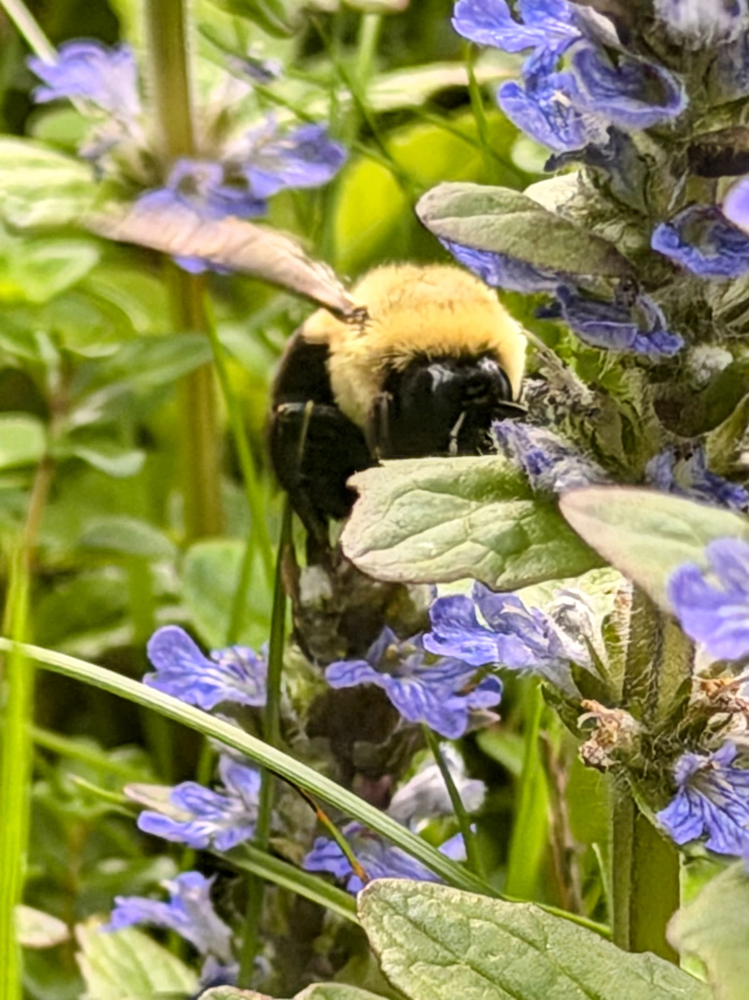

Our Story
More Than a Retreat.
More Than a Retreat.
A Living Sanctuary.
Rooted in place, guided by nature, and built for the kind of rest the modern world rarely offers.
Rooted in place, guided by nature, and built for the kind of rest the modern world rarely offers.
Shinrin-Yoku Sanctuary was born out of a simple but urgent belief: that people need places where they can truly stop. Not just pause — but stop, breathe, and remember what stillness feels like.
Nestled in the quiet Hilltowns of western Massachusetts, just beyond the well-worn paths of the Berkshires, SYS was carefully created as a space where the land itself is the host. The 47 acres of mixed hardwood and evergreen forest provide shelter, wonder, and the quiet company of something older and wiser than any of us.
Whether you arrive as a solo traveler seeking solitude, a couple looking to reconnect, or a small group in need of renewal, SYS meets you exactly where you are.

Shinrin-Yoku (森林浴) is a Japanese term that translates literally as "forest bathing." Introduced in Japan in 1982 as part of a national health program, it describes the practice of immersing oneself in the forest atmosphere — slowly, mindfully, and with all the senses open.
Unlike hiking or exercise, Shinrin-Yoku is not about a destination. It is about presence. Research has shown that time spent in forest environments can lower cortisol levels, reduce blood pressure, boost immune function, and improve mood and concentration.
At SYS, we honor this practice not as a trend but as a timeless truth: the forest has always been medicine. We simply create the conditions for you to receive it.

We design every experience to resist urgency. Healing requires time, and we protect that time fiercely.
The land is not ours — we are its caretakers. Every decision at SYS is made with the forest's long-term health in mind.
No performances, no programs for the sake of programs. We offer only what we believe in and what the land can genuinely provide.
To nature, to self, to others. We believe these three connections are inseparable, and we cultivate all of them.
Located in the Berkshire Hilltowns of western Massachusetts — a region of rare quiet, rolling hills, and old-growth character — SYS sits on a landscape shaped by glaciers, streams, and centuries of undisturbed growth.
Oak, maple, birch, hemlock, and white pine create a rich, layered canopy across the property in every season.
Two seasonal streams and a wetland meadow area support diverse wildlife and provide natural soundscapes for immersion walks.
Several miles of maintained, marked trails wind through the property — from open ridgelines to deep forest hollows.
Far from urban light pollution, SYS offers exceptional stargazing on clear nights — a rare and overlooked form of nature therapy.
Spring wildflowers, summer canopy, fall foliage, and quiet winter snow each offer their own form of restoration and wonder.
White-tailed deer, wild turkey, fox, and a rich variety of songbirds share the sanctuary — reminding guests they are visitors in a living world.
After years of searching, 47 acres in the Berkshire Hilltowns is acquired — a property with deep forest, natural water features, and the essential quality of true quiet.
The first year is spent in observation. No construction, no programs — just learning the rhythms, contours, and character of the forest before shaping any plans.
The trail network is hand-cleared and marked. Initial accommodations are built with low-impact materials sourced from the region, designed to rest lightly on the land.
SYS opens to its first guests for quiet stays and guided forest walks. Word spreads slowly and organically — exactly the way the founders intended.
SYS continues to deepen its offerings, expand its guide team, and strengthen its commitment to the land — welcoming guests who are ready to let the forest do its work.
Our small, dedicated team brings together expertise in nature therapy, ecology, and hospitality — all united by a deep love of this land.

The vision behind Shinrin-Yoku Sanctuary. A lifelong seeker of wild places, DaMoha has spent years restoring and deepening the forest — and inviting others to experience its quiet power.

Trained in Shinrin-Yoku and mindfulness-based practices, Sophia brings a grounded, adventurous spirit to every walk — shaped by years of exploring wild landscapes around the world.

With deep roots in ecology and a scholar's curiosity, Maria reads the forest like a living library — guiding guests through the seasonal rhythms, flora, and hidden life of the Hilltowns.
Every stay at SYS is a chance to return to something essential. We'd love to welcome you.